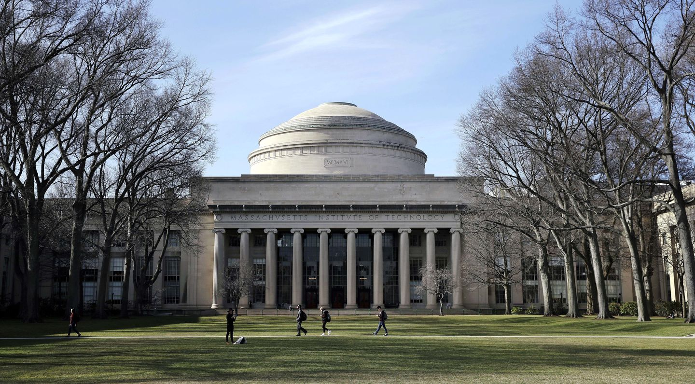
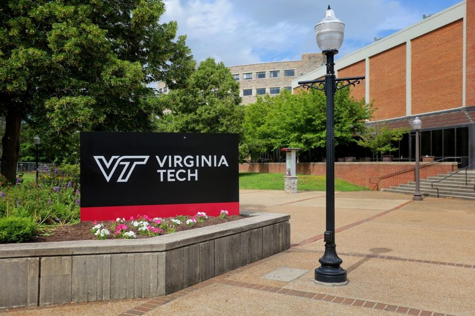

Oferta Educativa de carreras afines a Ingenieria en Informatica
Hoy en día son muchos los estudiantes que se sienten atraídos por las últimas tecnologías que se vienen desarrollando, tanto del hardware como del software. Y como consecuencia del ritmo tan acelerado de crecimiento de la tecnología y la escasez de recursos naturales, cada vez es mayor la demanda de ingenieros. A la hora de elegir la mejor universidad para estudiar ingeniería es muy útil conocer dónde se encuentran los ecosistemas tecnológicos con empresas y universidades implicadas en los últimos avances de investigación y desarrollo, incluyéndose al hardware y software de gran manera. No es ningún secreto que los Estados Unidos es uno de los lugares preferidos y uno de los mejores sistemas de educación superior del mundo. Y es que la mayoría de las universidades de más prestigio se encuentran en Estados Unidos. Concretamente, en el ámbito de la ingeniería, son las oportunidades relacionadas con la investigación lo que atrae a muchos estudiantes universitarios a centros universitarios ubicados en Estados Unidos.

Las mejores escuelas de educación superior de ingeniera que ofrecen la posibilidad de desenvolverte y desarrollarte de una manera eficaz en el ámbito del hardware.
Instituto de Tecnología de Massachusetts (MIT)
Se trata de la universidad No. 1 en todo el mundo en lo que a programas académicos en Ingeniería y Tecnología se refiere. Su Departamento de Ingeniería Eléctrica y Ciencias de la Computación imparte reconocidos cursos de pregrado como: Ingeniería Eléctrica y Ciencias de la Computación, Ciencias de la Computación e Ingeniería, y Ciencias de la Computación y Biología Molecular. La Maestría en Ingeniería permite la especialización en áreas como Inteligencia Artificial, Sistemas y Teoría; así como también llevar a cabo proyectos de investigación.
Universidad de Stanford
Dicta cursos de pregrado y postgrado en Ciencias de la Computación, que cubren tópicos como inteligencia artificial, ingeniería en computación, biocomputación, computación humana, gráficos, sistemas, teoría computacional y muchos más. Además, cuenta con un programa especial denominado CURIS, que proporciona oportunidades investigativas para los estudiantes durante el verano.
Universidad Carnegie Mellon
Cuenta con un innovador programa de Bachiller en Ciencias en Ingeniería Eléctrica y de Computación, conformado por módulos que cubren las principales áreas de la ingeniería, física aplicada, matemáticas, circuitos, hardware y software, y sistemas. Su MS en Ingeniería de Software constituye uno de los cursos de postgrado mejor calificados en Estados Unidos, diseñado pensando en las necesidades de la industria del software y haciendo énfasis en la comprensión de los sistemas contemporáneos, la computación en nube, los sistemas basados en la Web y las aplicaciones de seguridad.
Universidad de Cornell
Su Escuela de Ingeniería Eléctrica y de Computación ofrece una Maestría en Ingeniería con un currículum ultra flexible, pues permite a los estudiantes escoger los módulos de su preferencia y diseñar sus propios cursos. Quienes optan por enfocar la carrera hacia la Ingeniería en Computación y los Sistemas Digitales, pueden realizar trabajos de investigación en interconexión de redes a nivel de chip, plataformas seguras de computación, potencia y confiabilidad de arquitecturas paralelas, hardware reconfigurable y auto mejorable, entre otros temas.
Virginia Tech
Esta casa de estudios es reconocida por su trayectoria y contribuciones en investigación académica, así como también por la excelencia educativa. El Departamento de Ingeniería Eléctrica y de Computación Bradley ofrece el renombrado curso de pregrado en Ingeniería en Computación (CPE), cuya finalidad es proporcionar una base crítica tecnológica para un amplio rango de industrias, entre ellas bioinformática, hardware computacional, redes de computadoras y seguridad, informática integrada, etc. Su Maestría en Tecnología de la Información es considerada uno de los más completos programas de su tipo, y cubre un gran espectro de tópicos relacionados.
Universidad de Harvard
La Escuela de Ingeniería y Ciencias Aplicadas ofrece una concentración en ciencias de la computación como parte de su oferta de pregrado. Los estudiantes de postgrado pueden optar por un campo secundario en ciencias computacionales e ingeniería (CSE), disponible también para cualquier alumno inscrito en programas de PhD dictados por la Escuela de Postgrado de Artes y Ciencias.
Universidad de Washington
Imparte cursos de pregrado bien diseñados en ingeniería en computación y ciencias computacionales; enfocados en programación, fundamentos de la computación, análisis e interpretación de datos, y un profundo estudio de ingeniería de software y hardware. Su programa integrado BS/MS de cinco años de duración es ideal para quienes desean asegurar un buen empleo.
Universidad de Illinois en Urbana Champaign
Se trata de una institución líder en investigación con una excelente oferta académica. Su Departamento de Ingeniería Eléctrica y de Computación otorga el popular título de Bachiller en Ingeniería en Computación, curso de 4 años de duración que incluye desde principios de física y matemática hasta diseño, implementación y análisis de sistemas ciber-físicos, de computación y comunicación.
Universidad de California
Su famosa Maestría en EECS, ofrecida a través del Colegio de Ingeniería (COE), combina los fundamentos de las ciencias computacionales y la ingeniería eléctrica. Además, imparte dos cursos de pregrado: Ingeniería Eléctrica y de Computación (ECE), e Ingeniería y Ciencias Computacionales (CSE).
Instituto de Tecnología de California (Caltech)

Dicta cursos de pregrado y postgrado en ciencias computacionales, computación y ciencias matemáticas, y matemáticas aplicadas y computacionales que gozan de gran popularidad. Además, quienes persiguen un PhD en cualquier disciplina, tienen la posibilidad de estudiar un programa menor en Ciencias Computacionales e Ingeniería.
Datos curiosos sobre Harvard

Un 8 de septiembre de 1636, en la región de Nueva Inglaterra, los colonos ingleses fundaron la Universidad de Harvard. Desde entonces, se mantiene como una de las instituciones educativas con mayor prestigio. Asimismo, es la universidad más antigua de los Estados Unidos. Pero esto no ha evitado que esté siempre a la vanguardia en la educación superior y la investigación en diversas áreas académicas.
Galeria:

Fuentes:
-http://www.estudiaryemprenderingenieria.com/?p=26686
-https://www.universia.net/es/actualidad/estudiar-en-el-extranjero/carreras-harvard-descubre-que-estudiar-1159412.html
-https://www.universia.net/es/universidades/university-of-stanford.01869.html
-https://www.hotcourseslatinoamerica.com/study/us-usa/school-college-university/cornell-university/72021/international.html
-https://www.hotcourseslatinoamerica.com/study/us-usa/school-college-university/massachusetts-institute-of-technology/72058/international.html
-https://www.hotcourseslatinoamerica.com/study/us-usa/school-college-university/carnegie-mellon-university/72009/international.html
-https://www.hotcourseslatinoamerica.com/study/us-usa/school-college-university/university-of-washington/72186/international.html
-https://www.hotcourseslatinoamerica.com/study/us-usa/school-college-university/university-of-illinois-urbana-champaign/1147/international.html